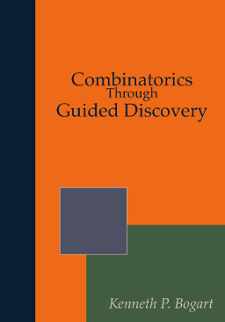

<!-- About/info -->
  <section class="section">
    <div class="container">
      <div class="columns is-variable is-8">
        <div class="column is-3 has-text-centered">
          <div class="content">
          <p></p>
            <p>
              <a class="button is-info is-outlined is-fullwidth" href="./ctgd/ctgd.html"><span class="icon is-small"><i class="fa fa-book"></i> </span><span>Read online</span></a>
            </p>
            <p >
              <a class="button is-info is-outlined is-fullwidth" href="./pdf/ctgd.pdf"><span class="icon is-small"><i class="fa fa-download"></i></span><span>Download PDF</span></a>
            </p>
            <p >
              <a class="button is-info is-outlined is-fullwidth" href="http://amzn.to/2CvXJbh" target="_blank"><span class="icon is-small"><i class="fa fa-shopping-cart"></i> </span> <span>Buy paperback</span></a>
            </p>
        </div>
      </div>
        <div class="column">
          <div class="content">
          
          
          <h3>Adoptions</h3>
          
          
          
          <p>
            Please <a href="mailto:oscar.levin@unco.edu">let us know</a> if you use the book in your class, so we can generate a list of institutions that have adopted this text in some form.
          </p>
          
          <p>
            This book has been used at a number of institutions over the years.  The updated version was used for a graduate level discrete math course at the University of Northern Colorado and for at least one other course elsewhere (based on sales data).  We will update this list as more information becomes available.c
          </p>

          <p><a href="."><span class="icon is-small"><i class="fa fa-arrow-left"></i> </span>Back to book description</a></p>
          
            </div>
          </div>
        </div>
      </div>
    </section>

  
